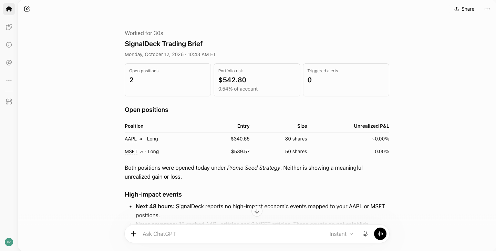
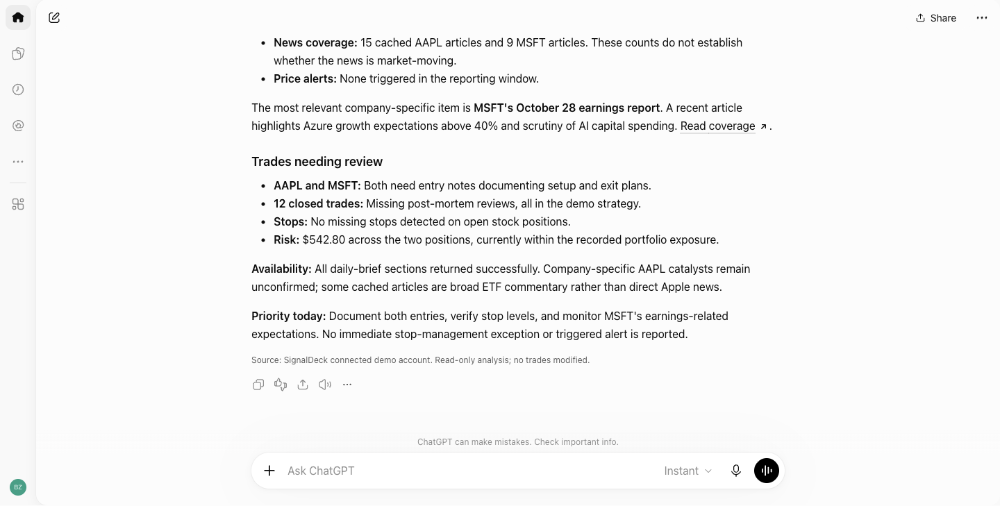
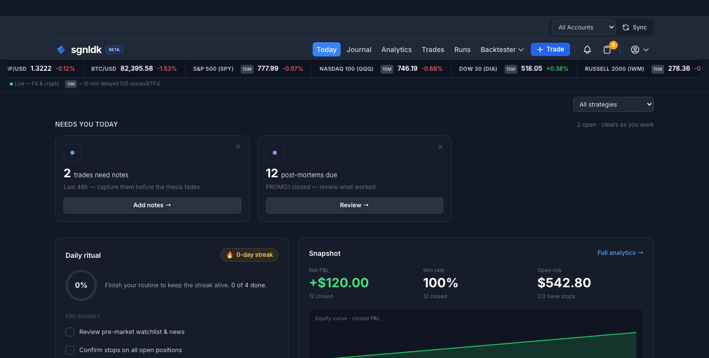

Watch the 86-second walkthrough. The account and positions shown are demo data; the ChatGPT and SignalDeck screens are real captures.
The question to ask
The new get_daily_brief MCP tool gathers a snapshot for ChatGPT to summarize. It includes open positions and portfolio risk, triggered alerts, high-impact economic events mapped to those positions over the next 48 hours, and trades with missing review work. The tool reads your SignalDeck account; asking for a brief does not place an order or edit a trade.
What the demo brief found
The filmed demo account holds two open positions, Apple and Microsoft, with $542.80 in open risk. There are no triggered alerts and no high-impact events mapped to either position in the next 48 hours. That absence belongs in the brief too: it tells you the tool checked, rather than leaving you to wonder whether events were omitted.

The unfinished work is in the journal. Two open trades need entry notes, and twelve closed trades still need post-mortems. No open trade is missing a stop. The practical next step is to check the positions in SignalDeck, then work through the review queue. The answer gives you a starting order; it does not decide whether to buy or sell.

Check the answer against the source
In the video, we move from ChatGPT to SignalDeck’s Today page to check the open positions and risk against the account itself. That is the habit we recommend for any assistant-generated brief. The assistant makes the daily scan easier to read, while the journal remains the source for the trade records and calculations.

The connection uses SignalDeck’s MCP server. You connect ChatGPT through a SignalDeck sign-in and consent flow. This particular request is read-only, even if other SignalDeck tools can write when separately authorized. Read-only access is a useful starting choice if you want the assistant to answer questions without changing the journal.
A working preview of the Daily Brief tool
We built get_daily_brief as an additional read-only MCP tool. The walkthrough shows it working against a demo account with the extended read feature enabled for filming. Its fields and production availability may change before release. The broader SignalDeck MCP connection already lets you ask ChatGPT questions about your journal; this brief is a faster way to start the day with the positions, event context, and review work in one response.
If you want to try the existing connection, start with the SignalDeck MCP guide. Once the Daily brief tool is available in your account, the prompt above will give you the same kind of starting point using your own data.
Put your journal in the conversation
Connect ChatGPT to SignalDeck, then ask questions grounded in your own trading records.
Learn how the connection works →